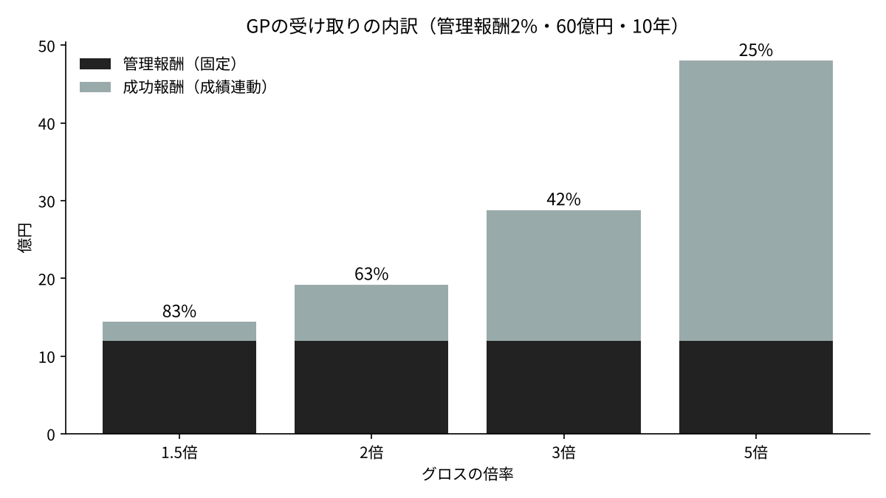
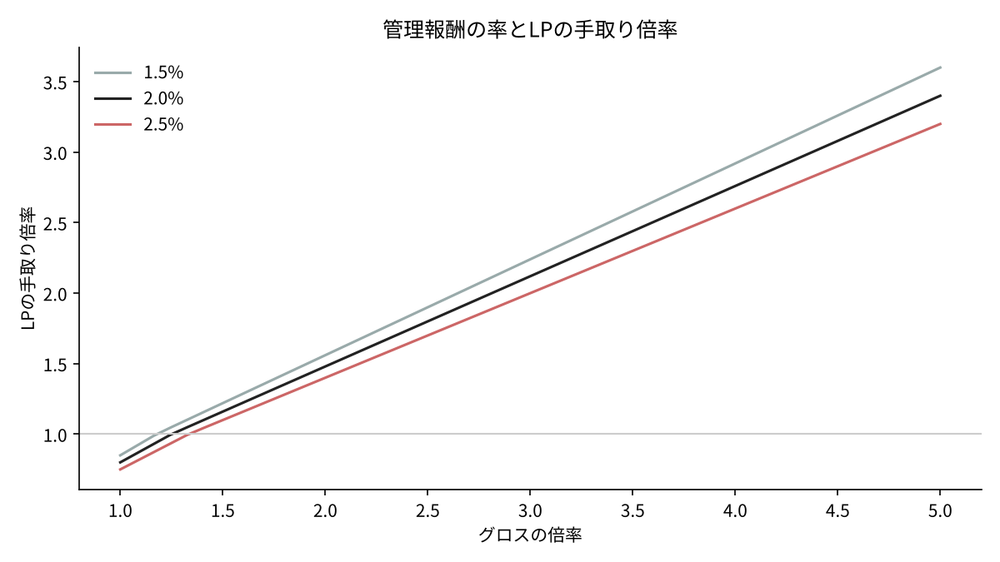

60億円のVCファンドで、管理報酬は運用成績とどれだけ連動するのか――ANOBAKA・経産省モデルLPA・Metrick＝Yasuda論文で検証
シードに特化したベンチャーキャピタル（VC）のANOBAKAが、60億円規模の4号ファンドを立ち上げ、管理報酬を返す仕組みを入れたことが話題になっている。
VCファンドの報酬は「管理報酬2%・成功報酬20%」が目安とされ、運用者はファンドが儲かっても儲からなくても管理報酬を受け取る。
本稿の問いは、60億円のファンドで、運用者の受け取りのうちどれだけが運用成績と無関係に決まり、出資者（LP）の手取りは成績にどれだけ連動するのか、である。
- 管理報酬2%・60億円・10年の試算では、グロス2倍の成績でGPの受け取りの約63%が成績と無関係な管理報酬になる。
- LPが元本を取り戻すだけで、グロス1.25倍が必要になる。管理報酬の率が0.5ポイント上がるごとに、投資に回る額は3億円減る。
- 管理報酬の返還は固定部分を成績に近づける試みだが、最後に手取りを決めるのは運用者を選ぶ力である。

問いと背景
まず言葉をそろえる。VCファンドは多くの場合、投資事業有限責任組合（LPS）という器で作られる。運用を担い無限責任を負う側を無限責任組合員（GP）、お金を出し有限責任を負う側を有限責任組合員（LP）と呼ぶ。
GPの報酬は大きく2つある。管理報酬は、出資約束額などに一定の率を掛けて毎年受け取る固定の報酬である。成功報酬（キャリード・インタレスト）は、ファンドの利益の一定割合を受け取る、成績に連動する報酬である。
経済産業省は、LPSの契約の雛形として「投資事業有限責任組合契約書例及びその解説（令和7年版）」を2025年6月に公表した。雛形は報酬の率を決めておらず、各ファンドが契約で決める形になっている。
報酬の目安として、米国の研究では「管理報酬2%・成功報酬20%・GPの出資1%」という型が典型として報告されている。ただし実際の契約には大きなばらつきがある。大きなファンドほど率を下げる例や、投資の期間が終わった後に報酬の基準を出資約束額から投資残高へ切り替える例もある。
ANOBAKAは、1社に1,000万円から5,000万円ほどを初めに出すシード特化のVCとして知られる。シードとは、会社ができたばかりで売上もまだ小さい段階を指す。この段階の投資は、多くが失敗し、ごく一部の大成功が全体の成績を決めると言われる。
データと方法
本稿では、60億円・10年のファンドを想定し、手元で単純な計算をする。前提は次の4つである。
第1に、管理報酬は出資約束額60億円に年率を掛け、10年間受け取る。第2に、管理報酬を除いた残りをすべて投資に回す。第3に、成功報酬は、LPに返したお金が出資約束額60億円を超えた分の20%とし、優先リターン（ハードル）は置かない。第4に、投資の総倍率（グロスの倍率）は、投資した額に対して何倍で回収したかで表す。
LPの手取りの倍率は「（投資額×グロスの倍率−成功報酬）÷60億円」で計算する。成功報酬は「0.2×（投資額×グロスの倍率−60億円）」で、0を下回るときは0とする。
たとえば管理報酬2%・グロス2倍なら、投資額48億円が96億円になる。60億円を超えた36億円の20%、7.2億円が成功報酬になり、LPの手取りは88.8億円、倍率にして1.48倍になる。
この計算は、実際のファンドの資金の出入りの時期や、期中の報酬率の引き下げを無視している。そのため結果は傾向をつかむための目安であり、特定のファンドの成績を示すものではない。

結果
管理報酬を年2%とすると、10年で12億円がGPに入り、投資に回るのは48億円になる。LPが出資額を取り戻すだけで、グロスで1.25倍が必要になる。
| グロスの倍率 | LPの手取り倍率 | 成功報酬 | 管理報酬（10年） | GPの受け取りに占める固定の割合 |
|---|---|---|---|---|
| 1.5倍 | 1.16倍 | 2.4億円 | 12億円 | 83% |
| 2倍 | 1.48倍 | 7.2億円 | 12億円 | 63% |
| 3倍 | 2.12倍 | 16.8億円 | 12億円 | 42% |
| 5倍 | 3.40倍 | 36億円 | 12億円 | 25% |
グロスで2倍の成績では、GPが受け取る19.2億円のうち12億円、約63%が成績と関係のない管理報酬になる。グロス1.5倍なら、その割合は83%まで上がる。固定の割合が半分を下回るのは、グロスで3倍に近い成績を出したときに限られる。

この傾向は先行研究とも合う。Metrick＝Yasuda（2010）は、PEファンドの運用者の期待収入のおよそ3分の2が、成績と関係の薄い固定的な部分から来ると推定した。
感度分析
管理報酬の率を1.5%・2%・2.5%の3通りに動かすと、LPの手取りは次のように変わる。
| 管理報酬の年率 | 投資に回る額 | 元本回収に必要なグロス倍率 | グロス2倍のLP手取り | グロス3倍のLP手取り |
|---|---|---|---|---|
| 1.5% | 51億円 | 1.18倍 | 1.56倍 | 2.24倍 |
| 2.0% | 48億円 | 1.25倍 | 1.48倍 | 2.12倍 |
| 2.5% | 45億円 | 1.33倍 | 1.40倍 | 2.00倍 |

管理報酬が0.5ポイント上がるごとに、投資に回る額は3億円減り、LPの手取りはグロス2倍の場合で0.08倍ほど下がる。率の差は小さく見えるが、10年積み重なると、LPの手取りに数億円単位で効いてくる。
次に、報酬の形を2通り変えてみる。1つ目は、前半5年を2%、後半5年を1%に下げる形である。この場合の管理報酬は9億円で、LPの手取りはグロス2倍で1.56倍、3倍で2.24倍になり、年1.5%を10年続けた場合と同じ数字になる。
2つ目は、成功報酬の率を20%・25%・30%に動かす形である。管理報酬2%のまま、グロス3倍でのLPの手取りは2.12倍・2.05倍・1.98倍と下がる。成績が良いほど成功報酬の率が効き、成績が平凡なほど管理報酬の率が効く、という対称の形が見えてくる。
| 成功報酬の率 | グロス2倍のLP手取り | グロス3倍のLP手取り | グロス5倍のLP手取り |
|---|---|---|---|
| 20% | 1.48倍 | 2.12倍 | 3.40倍 |
| 25% | 1.45倍 | 2.05倍 | 3.25倍 |
| 30% | 1.42倍 | 1.98倍 | 3.10倍 |
考察
反対の見方もある。管理報酬は、良い投資先を探し、支援する人を雇うための費用であり、削りすぎれば成績そのものが落ちるという考え方である。Robinson＝Sensoy（2013）は、報酬が高いファンドほど報酬控除後の成績が悪い、という証拠は見つからなかったと報告している。
また、VCの成績は時期によって大きく違う。Harris＝Jenkinson＝Kaplan（2014）は、米国のVCファンドが1990年代には株式市場を上回り、2000年代には下回ったと示した。さらにHarris＝Jenkinson＝Kaplan＝Stucke（2023）は、VCでは同じ運用者の成績が次のファンドでも続きやすいと報告している。報酬の率より、どの運用者に預けるかの方が手取りに効く可能性がある。
LPが2%・20%の型を受け入れてきた理由も、ここにある。上位の運用者のファンドには入りたい出資者が多く、報酬の率を交渉する余地は小さい。報酬を下げるより、入れる枠を得ることの方が大事だと考えるLPもいる。
報酬の重さは、出す側の大きさでも変わる。Sorensen＝Wang＝Yang（2014）は、管理報酬・成功報酬・換金のしにくさがLPにとって大きな費用になり、GPはそれを上回る超過リターンを生む必要があると論じた。売りたいときに売れないお金には、目に見える報酬のほかに、見えない費用もかかっている。
本稿の計算の限界は3つある。資金の出入りの時期を無視していること、ハードルや報酬率の段階的な引き下げを置いていないこと、そして日本のVCファンドの報酬と成績の公的な一覧が乏しいことである。
答え合わせの基準は、管理報酬を返す仕組みを持つファンドと持たないファンドの、報酬控除後の成績の差である。返す仕組みが成績を下げずにLPの手取りを増やすと分かれば、結論は「固定の報酬は減らせる」に変わる。
結論
60億円・10年・管理報酬2%の単純な計算では、GPの受け取りの過半は、グロスで3倍近くに届くまで成績と無関係に決まる。LPが元本を取り戻すだけで、グロス1.25倍が必要になる。
管理報酬を返す仕組みは、この固定の部分を成績に近づける試みとして読める。ただし、報酬を下げても成績が上がるとは限らず、最後は運用者を選ぶ力に戻ってくる。
出資する側が契約の前に見るべき数字は3つにまとめられる。管理報酬の年率と期間、元本を取り戻すのに必要なグロスの倍率、そして運用者の過去のファンドの報酬控除後の成績である。
僕はこう見ている
僕は個人で約10社のスタートアップに直接出資し、約9社が失敗した。出資を始める前にVCファンドのLPになることも考えたが、一口5,000万円ほどと聞いて見送った。
今回の計算をしてみて、一口の大きさに加えて、毎年の管理報酬が10年でどれだけ効くかも見ておくべきだったと思う。今は上場企業の中から、自分で理由を書ける会社を選ぶ形を続けている。
上場株には管理報酬がかからず、毎日値段がつき、売りたい日に売れる。その代わり、創業期の会社に出すような大きな倍率は狙いにくい。僕は、10年で10倍を目指せる会社が上場後にもあると考え、そこに資金を置いている。
今、VCファンドに誘われても入らない。一口の大きさに見合うほど、中身を自分で判断できないからである。
出典
- 経済産業省「投資事業有限責任組合契約書例及びその解説（令和7年版）」2025年6月 https://www.meti.go.jp/policy/economy/keiei_innovation/keizaihousei/pdf/00_model_lpa_with_commentary_2025.pdf
- Metrick, A. and Yasuda, A.「The Economics of Private Equity Funds」Review of Financial Studies 23(6), 2010（ワーキングペーパー版） https://rodneywhitecenter.wharton.upenn.edu/wp-content/uploads/2014/04/0717.pdf
- Robinson, D. and Sensoy, B.「Do Private Equity Fund Managers Earn Their Fees?」NBER Working Paper 17942 https://www.nber.org/papers/w17942.pdf
- Harris, R., Jenkinson, T. and Kaplan, S.「Private Equity Performance: What Do We Know?」Journal of Finance 69(5), 2014 https://www.nber.org/papers/w17874
- Harris, R., Jenkinson, T., Kaplan, S. and Stucke, R.「Has Persistence Persisted in Private Equity?」Journal of Corporate Finance 81, 2023 https://ora.ox.ac.uk/objects/uuid:af763da4-c1af-419f-8c86-9004859e92c4/files/r1831ck692
- Sorensen, M., Wang, N. and Yang, J.「Valuing Private Equity」NBER Working Paper 19612 https://www.nber.org/papers/w19612.pdf
図・トップ画像はYUKI CAPITALが作成
日々の数字と判断は、Xで記録している。